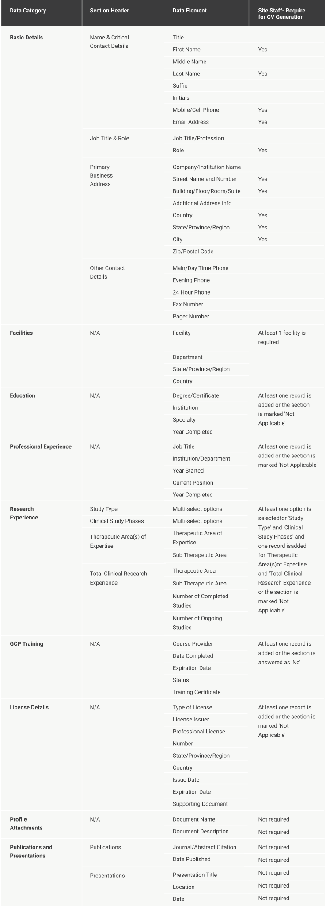

Privacy
1. Where can I find the privacy policy for the SIP?
The privacy policy is available on SIP landing page (https://www.sharedinvestigator.com/home). Potential users may read the policy prior to registration if they wish, or at the time of registration. Once a user has registered, a link to the privacy policy is at the bottom of every page in the system. Please note: the single sign-on service provided by Exostar has a separate privacy policy, which is also accessible on the registration page, or on Exostar’s website.
2. Where can I find the terms of use for the SIP?
The terms of use are available on SIP landing page (https://www.sharedinvestigator.com/home). Potential users may read the terms of use prior to registration if they wish, or at the time of registration.
3. What do I have to consent to when I register as a SIP user?
Before signing up with SIP, you must first obtain a single sign on from Exostar if you do not already have one. As part of that process, you will need to consent to the Exostar privacy policy and terms of use.
On the SIP registration screen, you will be asked to accept the SIP privacy policy and terms of use. You will also be asked to consent to allowing your information to be hosted in the Shared Investigator Platform and the Investigator Registry, where it will made available to all participating Sponsors to facilitate the recruitment of investigators for clinical trials.
4. What if I don’t want to consent to all of those things?
Investigators cannot register in SIP without checking all the consent boxes. However, you have the right to withdraw your consent at any time and stop using the system.
5. What is the Investigator Registry?
The Investigator Registry is a shared repository of consenting investigator, site, and study details created by DrugDev and TransCelerate Biopharma, Inc. and its member companies. The database is designed to facilitate faster identification and recruitment of qualified investigators based on previous experience and will prevent duplication of site qualification activities. By participating in the SIP, you consent to have your information shared within the Investigator Registry.
6. After I consent, what information will be collected from me?
SIP captures the following information about Investigators in the SIP User Profile.
7. Who will be the Data Controller of my data, since all companies will have access to each site/user profile?
The controllers of the investigator data (the only processed personal data in SIP) are the participating sponsor companies. Neither Cognizant, nor Exostar, nor DrugDev is the data controller of any investigator data collected in SIP. Exostar has controllership of the login and registration data that a User submits in order to set up an Exostar account to sign onto the SIP. This is the user name and the user’s email. Exostar must have controllership over this data because the SSO system is a standalone system with other clients outside SIP.
8. What legal basis is being used for the processing of data?
Consent is the legal basis for processing data added by the user into the SIP.
9. How do I know which sponsors will have access to my information?
Registration page and Section 8 of the privacy policy. As new sponsors join the system, you will be sent notices announcing that they have joined the system. Those new sponsors will also have access to your investigator information, but not any data from specific clinical trials. As always, you have the right to withdraw your consent and stop using the system at any time.
A list of sponsors currently participating in the Investigator Registry is available in Section 8 of the Privacy Policy.
10. Is there are way to limit access to my information to selected Sponsors?
All participating SIP Sponsors will have read-only access to the user profile information of all registered site users. Any other information you provide through the Platform, for example, communications with a Sponsor, will not be shared with other Sponsors.
11. Is my information shared with any third parties? Which ones?
The Sponsors share your information with service providers who provide services that are necessary to operate the Platform or Registry, including Cognizant and DrugDev, and as otherwise disclosed in this Privacy Policy. The Sponsors may also share your information with third party partners it retains to assist in the conduct of clinical trials, for example, clinical research organizations. The System also uses other trusted third parties to provide additional services, such as Exostar LLC who provide identity access management services. Your information will therefore be available to, and used by, these third party partners, where it is necessary in order for them to provide their services to the Sponsors.
12. How can I withdraw my consent to have my information shared within the SIP?
You can contact the SIP Help Desk at SIPHelp@cognizant.com. Please note that withdrawing your consent to have your information shared within the SIP only covers SIP, and not the registry. Please note, however, that we will not delete information relating to ongoing clinical trials or information which the Sponsors need to retain to meet their regulatory requirements. As a consequence:
- If you are currently participating in an ongoing clinical trial, your request will not be actioned, and you will need to resubmit your request when the trial is complete.
- If you have previously participated in a clinical trial utilizing the Platform, although your profile will no longer be visible in the Platform, please note the relevant Sponsor(s) will retain your information as necessary for their own record-keeping obligations.
13. How can I withdraw my consent to have my information shared within the Registry?
You can contact the SIP Help Desk at SIPHelp@cognizant.com, and they will coordinate with the Registry.
14. How long is my account/information kept active within the SIP?
Provided you have not deleted your account, if you do not login to the Platform for three years, your account will be automatically closed, and your information may be deleted thereafter (except for information which it is necessary to retain for recordkeeping purposes). You will receive an email notification prior to closing your account, so you have time to login to your account and prevent this.
15. How can I delete my account?
If you would like to close your account so you are no longer visible in the Platform, please contact the SIP Help Desk at SIPHelp@cognizant.com. Please note, however, that we will not delete information relating to ongoing clinical trials or information which the Sponsors need to retain to meet their regulatory requirements. As a consequence:
- If you are currently participating in an ongoing clinical trial, your request will not be actioned, and you will need to resubmit your request when the trial is complete.
- If you have previously participated in a clinical trial utilizing the Platform, although your profile will no longer be visible in the Platform, please note the relevant Sponsor(s) will retain your information as necessary for their own record-keeping obligations.
16. Is there a separate consent to set up a Facility Profile or Department?
Site users consent to all terms during initial registration. A Site user is not required to accept any additional consent during the creation of Facility or Department. For additional information, please refer to Section 8 – EEA Data Controllers in the Privacy Policy.
17. What information is captured about each of our Site Staff?
SIP captures the following information about Site Staff in the SIP User Profile. The information captured for site staff users is the same as for investigators. The only differences are the fields that are mandatory for CV generation
18. If my staff registers in SIP who will have access to their information?
All participating Sponsor Users in SIP have access to the SIP Site User Profiles for all registered SIP Site Users. Site Users cannot see the User Profiles of other site users with the following exceptions:
- Facility Profile Managers – Individuals with the Facility Profile Manager, Head of Facility, and Head of Facility Delegate roles can view the User Profiles of the nvestigators and Site Staff who have added the Facility to their User Profile.
- Department Profile Managers – Individuals with the Department Profile Manager, Head of Facility, and Head of Facility Delegate roles can view the User Profiles of the Investigators and Site Staff who have added the Department within the Facility to their User Profile.
- User Profile Delegates – Individuals who are chosen as User Profile Delegate by an Investigator or Site Staff member can view and update the User Profile.
- Organization Staff – Organizations that have a confirmed relationship with a Facility can view the User Profiles of the staff that are affiliated with those Facilities. The ability to view the Profiles depends on the nature of the relationship between the Organization and the Facility. This is new as a Release R3.1. Details on this relationship are available in the Organization Profile
Please refer to the definitions of Facility, department and Organization here.
19. Is there are way to limit access to my Institution or staff information to selected Sponsors?
No. All participating SIP Sponsors will have read-only access to the user profile information of all registered site users. Sponsors will also have read only access to the profiles of all the facilities/departments and organizations in SIP.
20. Will the institution be notified when their information is shared with other parties?
As part of the registration process, each user consents to their information being used in the Shared Investigator Platform and the Investigator Registry where it will be made available to all participating Sponsors to facilitate the recruitment of investigators for clinical trials. The institution will not be notified each time their information is viewed. A list of sponsors currently participating in the Investigator Registry is available in Section 8 of the Privacy Policy.
21. Does the system use cookies?
Yes. Below please find a table of the types of cookies, their uses, and if it is possible to opt out and how to do so.
If you wish to do so, you can disable cookies on your device by indicating this in the preferences or options menus in your browser. However, some parts of the Platform will not operate correctly if you disable certain cookies. You should consult with your browser’s provider/manufacturer if you have any questions regarding disabling cookies.
You can configure your cookies settings or deactivate your cookies on the main available browsers at the following links:
• Google Chrome https://support.google.com/accounts/answer/61416?hl=en
• Mozilla Firefox https://support.mozilla.org/en-US/kb/enableand-disable-cookies-website-preferences
• Internet Explorer http://windows.microsoft.com/en-gb/internetexplorer/delete-manage-cookies#ie=ie-10-win-7
• Safari https://support.apple.com/kb/PH17191?viewlocale=enUS&locale=enUS
• Safari for IOS (iPhone and iPad) https://support.apple.com/en-gb/HT201265
• Chrome for Android https://support.google.com/chrome/answer/2392971?hl=en-GB